$$\newcommand{\der}[3][]{\dfrac{\mathrm d^{#1} #2}{\mathrm d #3^{#1}}} \newcommand{\p}{\partial} \newcommand{\op}[1]{\operatorname{#1}}$$
普物甲上
Lecture 13
- Newton’s 2nd Law of Rotation: $\displaystyle \sum \vec\tau_{ext} = \der{\vec L}t$, where $\vec\tau=\vec r\times \vec F$ is the torque.
Lecture 14
Lecture 15
令地球質量為 $M$，衛星質量為 $m$。
橢圓軌道 (hw5 Q2)
速度
- The second cosmic velocity (escape): $v=\sqrt{\dfrac{2GM}R}$.
- $\dfrac 12 mv^2+U_{grav}\geq 0$
- Schwarzschild Radius: $R_s=\dfrac{2GM}{c^2}$
- The first cosmic velocity (orbit): $v=\sqrt{\dfrac{GM}{R}}$
Lecture 16~17
- (hw6 Q1) $m\ddot x+b\dot x+kx=F\sin (\omega_d t)$ 的解
- angular SHM: $I\alpha_z=\tau_z=-\kappa\theta$ ($\kappa=$ torsion constant) $\leadsto \omega=\sqrt{\kappa/I}\leadsto \theta(t)=\Theta\cos(\omega t+\phi)$
Lecture 18~19
繩波
雜項
- Wave Intensity (3D waves): $I=\dfrac{P_{av}}{A}$
- Principle of Superposition: since wave equation is linear
- 積化和差
- $\sin\alpha\cos\beta=\dfrac{\sin(\alpha+\beta)+\sin(\alpha-\beta)}{2}$
- $\cos\alpha\sin\beta=\dfrac{\sin(\alpha+\beta)-\sin(\alpha-\beta)}{2}$
- $\cos\alpha\cos\beta=\dfrac{\cos(\alpha+\beta)+\cos(\alpha-\beta)}{2}$
- $\sin\alpha\sin\beta=-\dfrac{\cos(\alpha+\beta)-\cos(\alpha-\beta)}{2}$
Standing Waves
- nodes, antinodes
- The average rate of energy transfer is zero at every point.
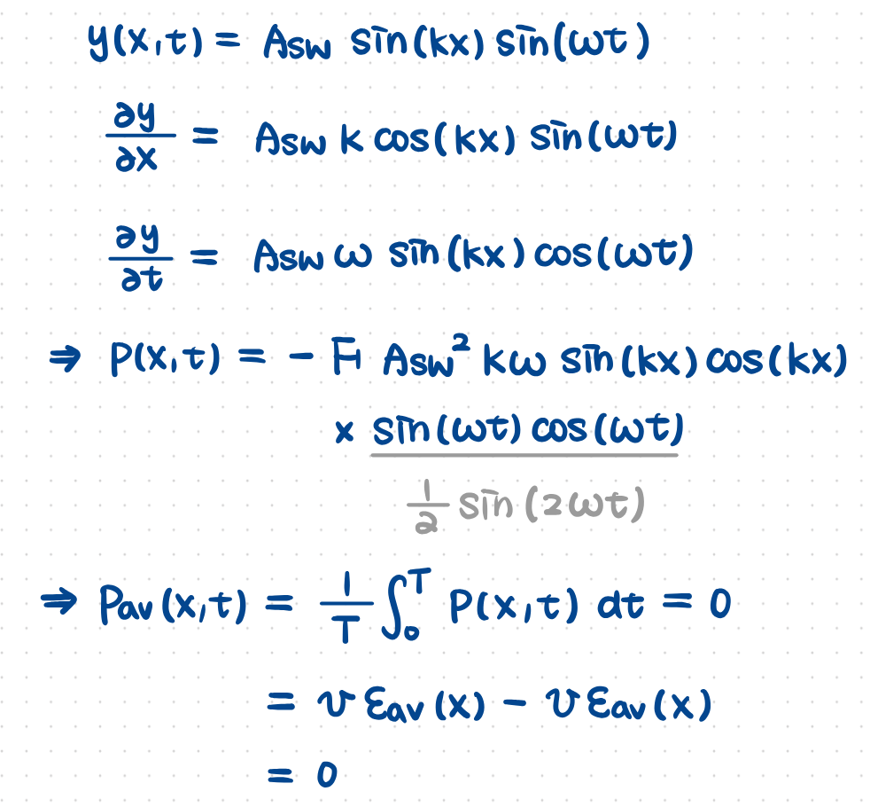
where $A_{sw}=2A=$ standing wave amplitude.
- Normal Modes
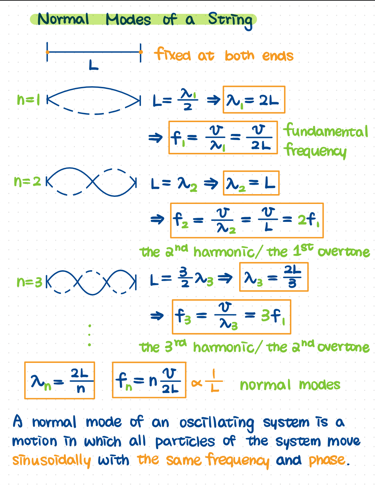
Lecture 20
Lecture 21
- The 0-th Law of Thermodynamics: If $C$ is initially in thermal equilibrium with both $A$ and $B$, then $A$ and $B$ are also in thermal equilibrium with each other.
- (Kelvin Scale) $0\op K=-273.15^\circ \op C$
- Linear expansion: $\alpha=\dfrac 1L\dfrac{\Delta L}{\Delta T}$
- Volume expansion: $\gamma=\dfrac 1V\dfrac{\Delta V}{\Delta T}=3\alpha$
Heat
- $1\,\mathrm{cal}=4.186\,\mathrm J$
- $1\op g$ 水從 $14.5^\circ\text C$ 升溫至 $15.5^\circ\text C$ 所需熱量
- Specific Heat (比熱): $c=\dfrac 1m\der QT$
- Molar Heat Capacity: $C=\dfrac 1n\der QT=Mc$
- Phase Transition: latent heat (潛熱) $L=Q/m$
Mechanisms of Heat Transfer
- Conduction (熱傳導)
- Property
- through: vibration of atoms, electrons (自由電子)
- good electric conductor = good thermal conductor
- poor thermal conductor = good thermal insulator （絕緣體）
- Heat current $H=\der Qt=\dfrac{\Delta T}R$
- $k$: thermal conductivity
- $R=\dfrac 1k\dfrac LA=$ 熱阻
- 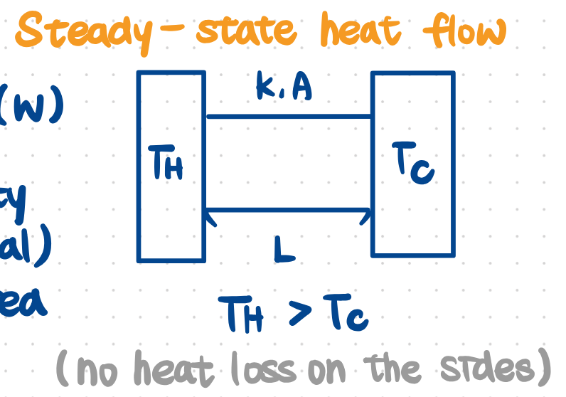
- 考點：串聯、並聯
- 對流
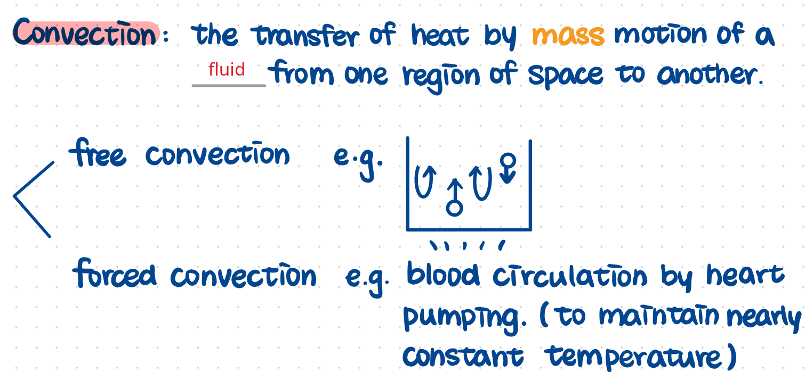
- 輻射
- Stefan-Boltzmann Law
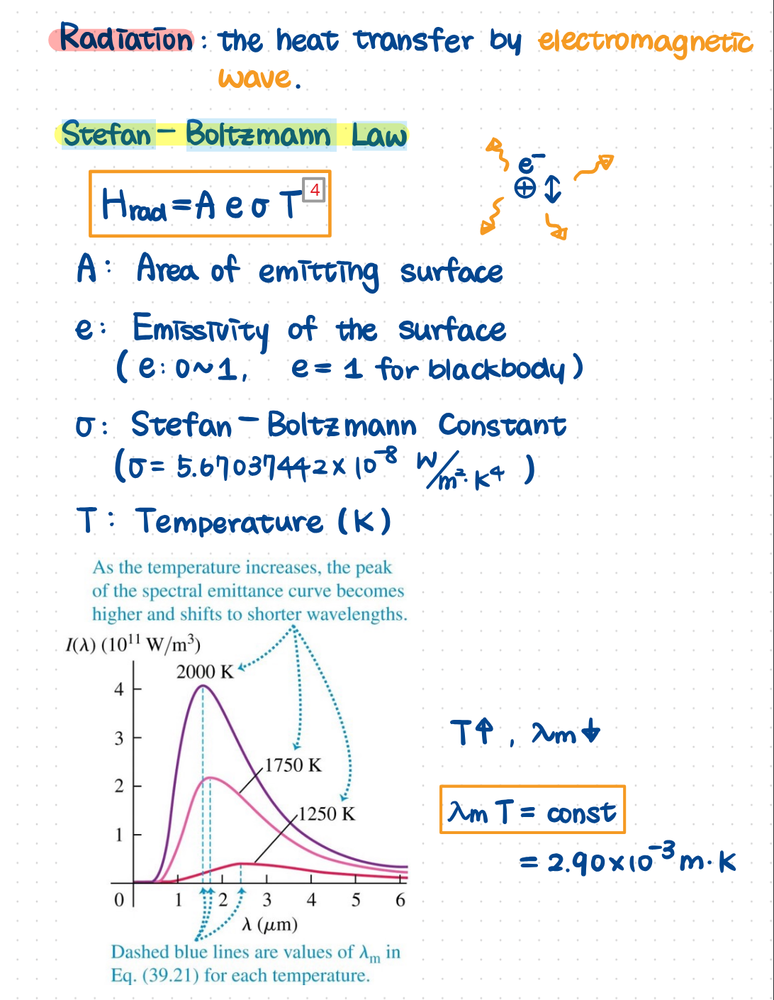
- 輻射冷卻
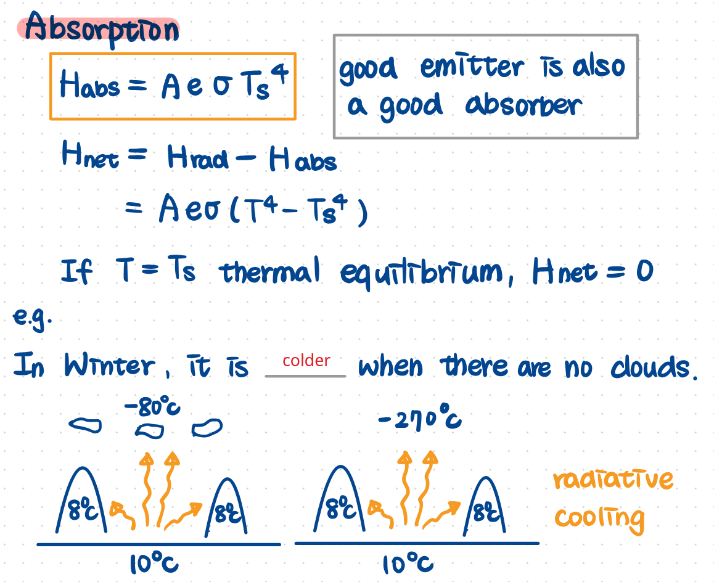
Lecture 22
- Ideal-Gas Equation: $PV=nRT$
- $R=\boxed{8.314 \op J/(\op{mol}\cdot\op K)}$
- $M=m_{tot}/n=$ molar mass
- $\rho=\dfrac{m_{tot}}{V}=\dfrac{PM}{RT}$
- $N_A=6.02\times 10^{23}\op{mol}^{-1}=$ Avogadro’s number
- $k_B=R/N_A=$ Boltzmann constant
- 理想氣體莫耳體積：$22.4\op L$
- under STP $=0^\circ\text C$ & $1\op{atm}=1013\op{hPa}$
- $1\op{mmHg}=133.3 \op{Pa}$
- 真實氣體在高溫低壓時接近理想氣體
- 理想氣體分佈：$P=P_0\exp\left( -\dfrac{Mg}{RT}y \right)$
- $\displaystyle \mathrm d P=\rho g\,\mathrm dy\leadsto \int_{P_0}^P\dfrac{\mathrm dP}P=-\int_0^y\dfrac{Mg}{RT}\mathrm d y'\leadsto \ln (P/P_0)=-\dfrac{Mg}{RT}y$
- 引擎原理 (p.2)、真實氣體 (p.6)
- 理想氣體：$K_{tr}=\dfrac 32 Nk_BT=$ kinetic energy of translational motion of all the molecules.
- Boltzmann Distribution
Lecture 23
Maxwell-Boltzmann Distribution
$$\displaystyle [Q(v)]_{av}=\int_0^\infty f(v)Q(v)\mathrm dv$$
- $f(v)=\underbrace{\left( \dfrac{m}{2\pi k_BT} \right)^{3/2}}_{\text{normalized constant}}\underbrace{(4\pi v^2)}_{\substack{\text{Geometric}\\\text{factor}}}\underbrace{\exp\left( -\dfrac{mv^2}{2k_BT} \right)}_{\text{Boltzmann Distribution}}$
- $\displaystyle \int_0^\infty f(v)\mathrm dv=1$ by Gaussian integral
- 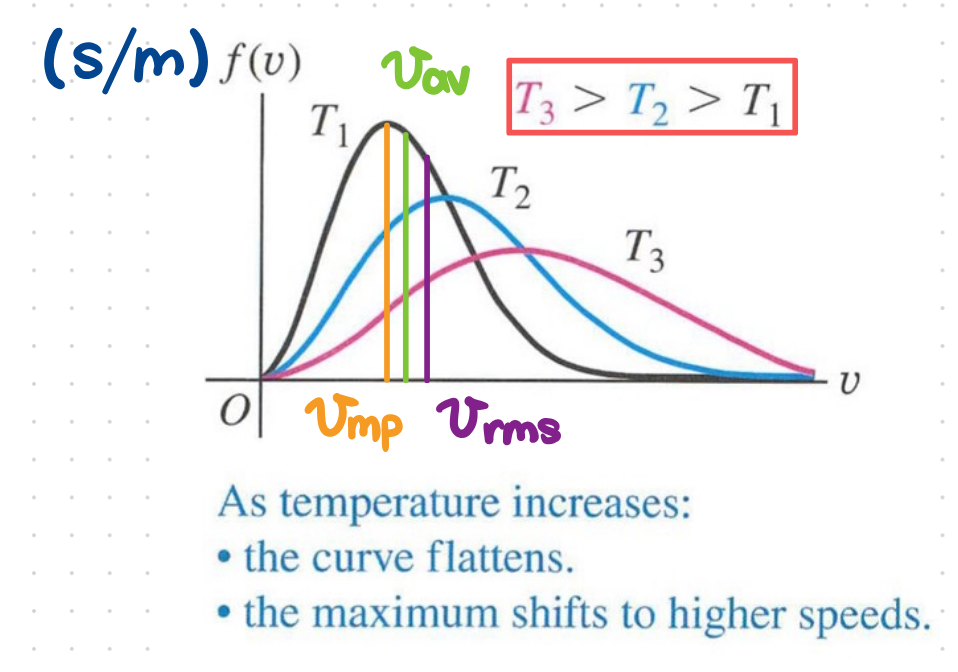
- 可計算 the most probable speed, average speed, rms speed.
Mean Free Path
- $\lambda=\dfrac{1}{\sqrt 2\pi d^2 N/V}$
- $d=2r=$ diameter
- Ideal gas: $d=0$, $\lambda=\infty$
The First Law of Thermodynamics
- $\Delta E_{int}=Q-W$
- 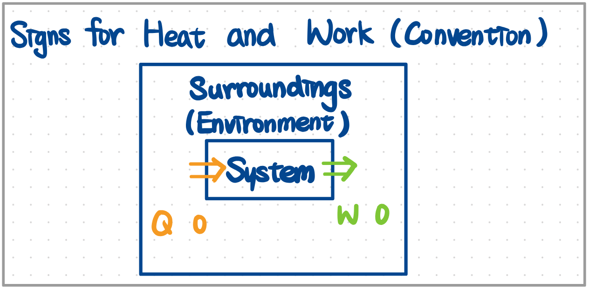
- $\displaystyle W=\int_{V_i}^{V_f} P\mathrm dV$，不限於 ideal gas
- e.g. the increase of the water’s internal energy when boiled $\Delta E_{int}=Q-W=mL_v-P\Delta V$, where $L_v=$ 汽化熱
- Quasi-Static Process $\implies$ the path can be plotted on a phase diagram （處處熱平衡）
氣體
- $\Delta E_{int}=nC_v\Delta T$
- 能量均分定理
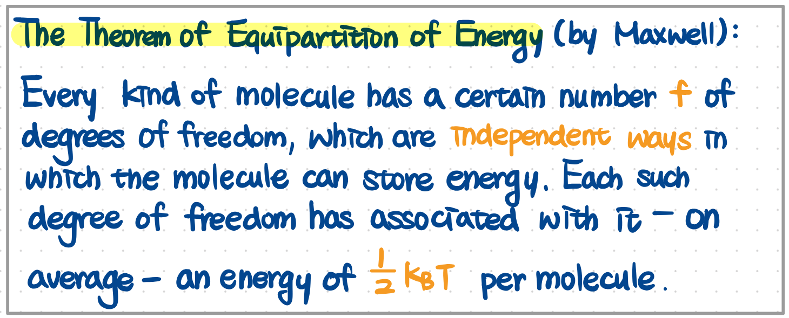
- $C_v=\dfrac f2R$, $f=\#$ degree of freedom
- 單原子氣體：$f=3$
- 雙原子氣體：$f=5$
Lecture 24
理想氣體
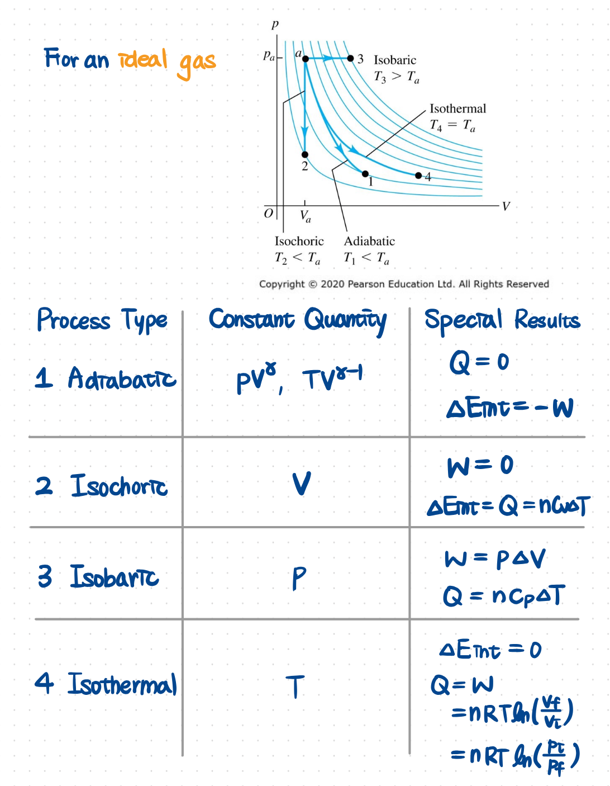
The Second Law Of Thermodynamics
- In an isolated system, $\Delta S\geq 0$
- “$=$” holds for reversible process, which can never be precisely attained in the real world.
- Entropy: $\displaystyle \mathrm d S:=\dfrac{\mathrm d Q}{T}$
- $S$ is a state variable
- Ideal Gas: $\Delta S=nC_v\ln(T_f/T_i)+nR\ln(V_f/V_i)$
Lecture 25
- Thermal Efficiency ($Q$ 是以 working substance 為主角)
- Second Law of Thermodynamics
- Kelvin-Planck Statement
- Clausius statement
- 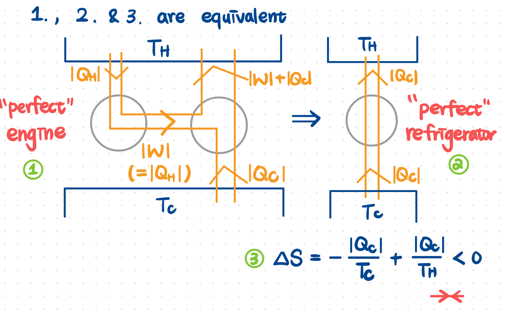
- Carnot Engine: $e_c=1-\dfrac{T_C}{T_H}\leadsto$ most efficient
- Carnot Refrigerator: $K_c=\dfrac{T_C}{T_H-T_C}$
- 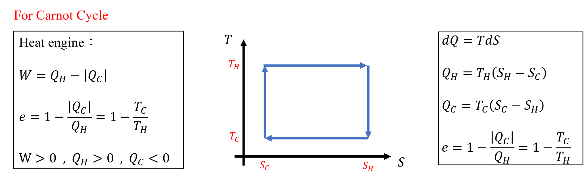